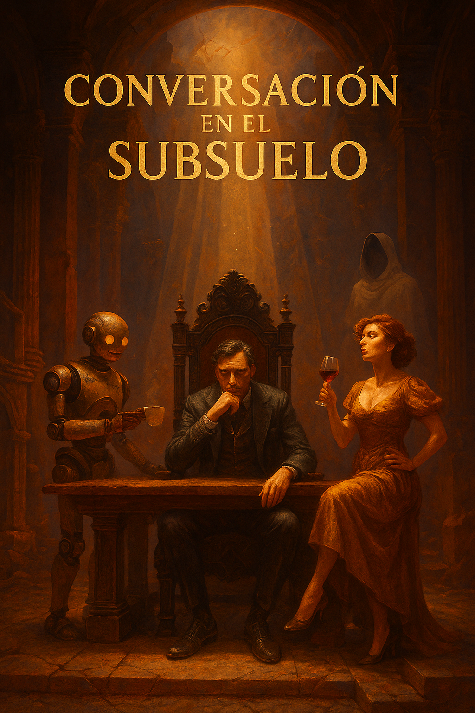

Con ecos de tragedia griega, influencias del romanticismo y una mirada crítica y contemporánea,
Conversación en el Subsuelo propone una travesía emocional y filosófica donde el humor
y la reflexión conviven en un subsuelo desolado por el avance de la inteligencia artificial.
Allí, su antiguo dueño, ahora venido a menos, transita su soledad acompañado por su mordaz esposa
y un asistente robótico de esos que ahora están de moda.
